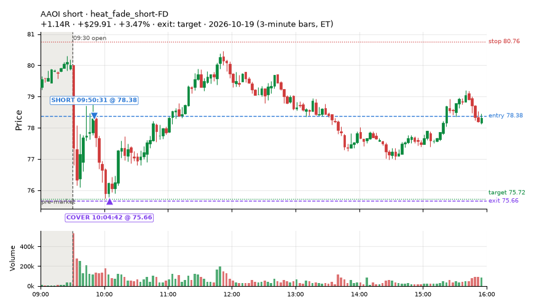
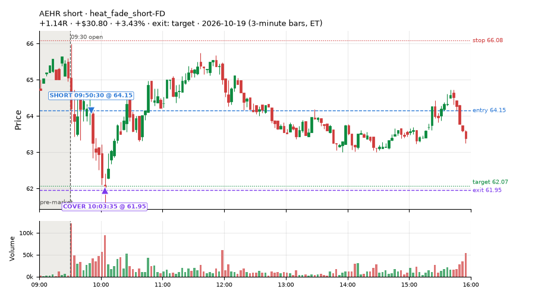
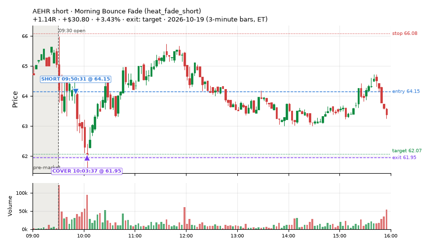
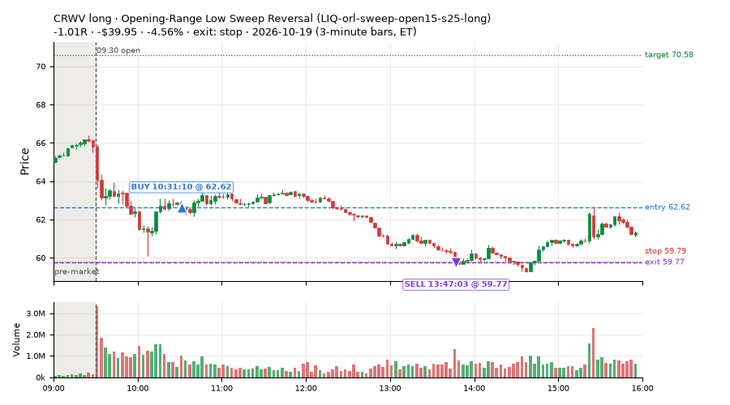
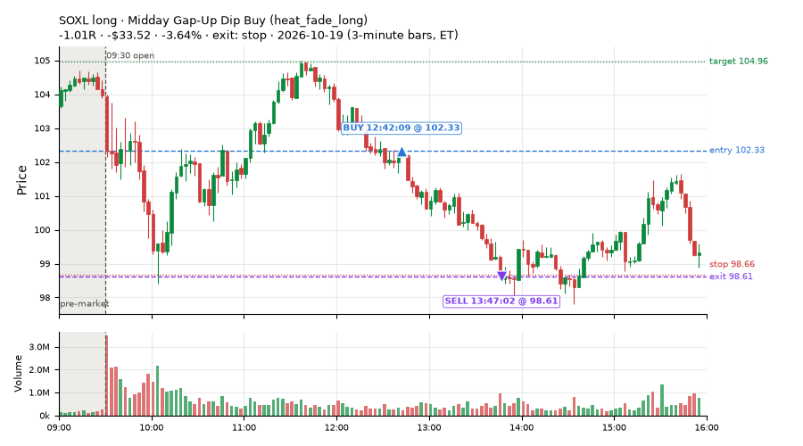
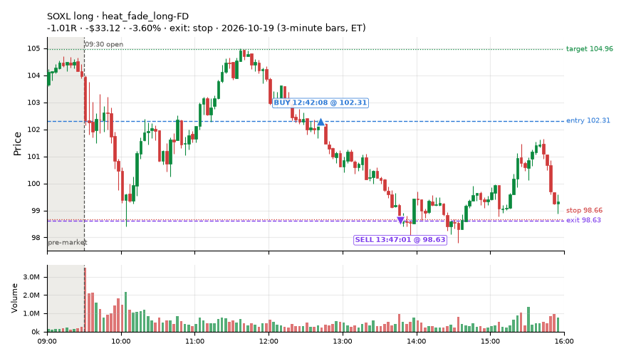
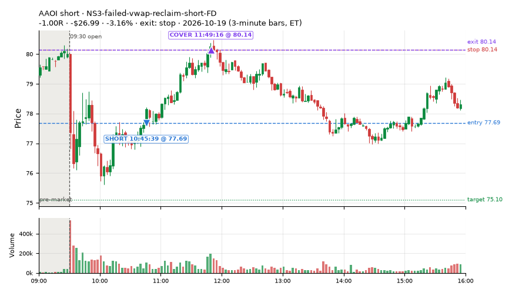

325 trades · win rate 49% · P/L $-140.90
PROBATION: no live setup has passed both locked test periods. 10 owner-directed setups added 2026-10-08 (MarcoFlow top 5 + 5 new), untested live. RW6G1 (RW6 + VWAP band guard) added 2026-10-09, probation.

| Symbol | Setup | Side | In | Out | Entry | Exit | Exit reason | % gained | P/L |
|---|---|---|---|---|---|---|---|---|---|
| AAOI | heat_fade_short-FD | short | 09:50 | 10:04 | 78.38 | 75.66 | target | +3.47% | $29.91 |
| AEHR | heat_fade_short-FD | short | 09:50 | 10:03 | 64.15 | 61.95 | target | +3.43% | $30.80 |
| AEHR | Morning Bounce Fade (heat_fade_short) | short | 09:50 | 10:03 | 64.15 | 61.95 | target | +3.43% | $30.80 |
| Symbol | Setup | Side | In | Out | Entry | Exit | Exit reason | % lost | P/L |
|---|---|---|---|---|---|---|---|---|---|
| CRWV | LIQ-orl-sweep-open15-s25-long | long | 10:31 | 13:47 | 62.62 | 59.77 | stop | -4.56% | $-39.95 |
| SOXL | heat_fade_long | long | 12:42 | 13:47 | 102.33 | 98.61 | stop | -3.64% | $-33.52 |
| SOXL | heat_fade_long-FD | long | 12:42 | 13:47 | 102.31 | 98.63 | stop | -3.60% | $-33.12 |
| AAOI | RW4-ns3-adv150-short-FD | short | 10:45 | 11:49 | 77.69 | 80.15 | stop | -3.17% | $-27.09 |
| AAOI | NS3-failed-vwap-reclaim-short-FD | short | 10:45 | 11:49 | 77.69 | 80.14 | stop | -3.16% | $-26.99 |







Signal to fill: median 1s, 90th percentile 2s (325 trades). Bars close each minute; the order follows the bar close.
Best excursion (MFE): median 0.64R; worst (MAE) median 1.00R. 27% of trades never got +0.25R in our favour; 9 reached +1R and still closed at or below 0.
| Symbol | Setup | Best R | Worst R | Closed R |
|---|---|---|---|---|
| DBMF | MF1-945-flowsell-vwapup-FD | +2.49 | -1.00 | -1.00 |
| VOOG | MF1-945-flowsell-vwapup-FD | +2.09 | -1.30 | -1.25 |
| VGT | MF1-945-flowsell-vwapup-FD | +1.61 | -1.13 | -1.00 |
| SPMO | LIQ-orl-sweep-open15-s25-long | +1.48 | -1.00 | -1.02 |
| CRDO | NS3-failed-vwap-reclaim-short | +1.25 | -1.09 | -1.03 |
| Entry time | Trades | Win | Avg R | P/L |
|---|---|---|---|---|
| 09:50-10:30 | 137 | 56% | +0.02 | $380.73 |
| 10:30-11:30 | 68 | 51% | +0.09 | $3.49 |
| 11:30-13:00 | 80 | 40% | -0.21 | $-404.94 |
| 13:00-14:00 | 28 | 46% | -0.13 | $-80.97 |
| 14:00-16:00 | 12 | 25% | -0.55 | $-39.21 |
| Setup | Trades | Win | Avg R | Adj R (net of SPY) | P/L |
|---|---|---|---|---|---|
| L3-gap-slope-fromopen-FD | 7.0 | 71% | +0.43 | +0.44 | $34.40 |
| L3-gap-slope-lowdist-FD | 3.0 | 100% | +0.90 | +0.90 | $26.69 |
| L3-gap-slope-rsi5hi-FD | 2.0 | 100% | +0.57 | +0.59 | $12.44 |
| Opening-Range Low Sweep Reversal (LIQ-orl-sweep-open15-s25-long) | 6.0 | 0% | -1.01 | -0.99 | $-112.96 |
| MF1-945-flowsell-vwapup-FD | 6.0 | 50% | +0.24 | -0.02 | $4.78 |
| MF2-open-rsimidhi-flowsell-FD | 2.0 | 0% | -1.15 | -1.06 | $-12.05 |
| Early Sellers into a Pop (all day) (MF3-open-flowsell-rsi5hi-FD) | 5.0 | 20% | -0.65 | -0.28 | $-21.58 |
| MF4-h40-open-flowsell-FD | 4.0 | 100% | +0.48 | -0.03 | $13.78 |
| MF5-flowsell-vwapup-rsi5hi-FD | 7.0 | 57% | +0.02 | +0.13 | $7.31 |
| NS2-sma50break-overbought-short-FD | 2.0 | 0% | -1.00 | -0.98 | $-30.54 |
| Big Loser VWAP Reclaim Fade (NS3-failed-vwap-reclaim-short) owner-directed; holdouts once: Sep-Oct +0.119R n65, Apr-Jun -0.136R n524 | 15.0 | 60% | +0.26 | +0.25 | $46.19 |
| NS3-failed-vwap-reclaim-short-FD | 18.0 | 61% | +0.33 | +0.31 | $91.16 |
| NS5-sma50-flush-oversold-long-FD | 4.0 | 0% | -1.04 | -0.99 | $-82.40 |
| RW1-gapdn-bounce-flowsell-short-FD | 3.0 | 0% | -1.00 | -1.18 | $-23.56 |
| RW2-exhaustion-noon-adv150-short-FD | 16.0 | 69% | +0.41 | +0.25 | $91.08 |
| Gap-Down Pop Fade, Heavy Selling (all day) (RW3-gapdn-rsi5pop-flowsell-short-FD) | 4.0 | 50% | -0.13 | -0.17 | $-5.63 |
| RW4-ns3-adv150-short-FD | 14.0 | 57% | +0.18 | +0.16 | $31.27 |
| Gap-Down Pop Fade (all day) (RW5-heat30-flowsell-rsi5pop-gapdn-short-FD) | 2.0 | 100% | +0.74 | +0.78 | $7.77 |
| RW6-ns2-up3-short-FD | 2.0 | 0% | -1.03 | -1.00 | $-31.11 |
| RW6G1-ns2-up3-vwap2sd-short-FD | 2.0 | 0% | -1.00 | -0.98 | $-30.50 |
| RW7-gapdn-bounce-early-short-FD | 19.0 | 26% | -0.50 | -0.53 | $-93.95 |
| ST1-ordn-long-pm-t05s1-FD | 1.0 | 0% | -1.02 | -0.99 | $-24.32 |
| ST2-slope20up-long-am-t05s1-FD | 8.0 | 25% | -0.60 | -0.48 | $-81.11 |
| ST4-emadn-long-am-t1s05-FD | 3.0 | 0% | -1.05 | -0.92 | $-27.92 |
| ST7-rsi50dn-long-pm-t1s1-FD | 1.0 | 100% | +0.50 | +0.32 | $7.38 |
| Afternoon Blow-off Short (exhaustion_short) failed Apr-Jun holdout: -0.020R/trade over 622 trades | 1.0 | 0% | -1.01 | -1.00 | $-11.20 |
| exhaustion_short-FD | 12.0 | 75% | +0.61 | +0.38 | $97.85 |
| Midday Gap-Up Dip Buy (heat_fade_long) failed Apr-Jun holdout: -0.138R/trade over 1043 trades | 13.0 | 0% | -1.03 | -0.98 | $-214.30 |
| heat_fade_long-FD | 22.0 | 27% | -0.52 | -0.56 | $-190.04 |
| Morning Bounce Fade (heat_fade_short) failed Apr-Jun holdout: -0.015R/trade over 1420 trades | 46.0 | 57% | +0.03 | +0.15 | $136.05 |
| heat_fade_short-FD | 75.0 | 61% | +0.14 | +0.13 | $244.12 |
Market direction (SPY, beta 1) accounted for $-36.38 of today's $-140.90; the rest ($-104.52) came from the setups themselves. Avg R net of SPY: -0.06 (incl. a hedge leg's cost; report only).
46 setups live today. Today: 776 signals, 457 taken, 152 lost because another setup held the symbol (20%). Since 2026-10-09 (7 sessions): 4572 signals, 1952 taken, 479 lost to other setups (10%). Peak open positions today 125 of 400 slots. Earnings blackout removed 367 symbols before scanning.
Simulated playing time (not live): 2296 what-if trades of signals not taken, avg -0.42R, 34% winners; of them 327 lost to another setup (avg -0.03R).
Silent: NS2-sma50break-overbought-short · Crowded out: ST3-rsi5up-short-pm-t1s1-FD, ST4-emadn-long-am-t1s05-FD, NS5-sma50-flush-oversold-long-FD, MF5-flowsell-vwapup-rsi5hi-FD, MF4-h40-open-flowsell-FD, RW4-ns3-adv150-short-FD, NS3-failed-vwap-reclaim-short-FD, MF1-945-flowsell-vwapup-FD, MF3-open-flowsell-rsi5hi-FD, RW4-ns3-adv150-short · Starved: ST5-pdbrkup-short-mid-t05s1-FD, NS4-pm-vwap-reclaim-oversold-short-FD, exhaustion_short, exhaustion_short-FD, orb20_a
| Prio | Setup | Today sig / taken | Sessions | Signals / taken / trades | Taken/day | Expected/day | Lost to other setups | Lost to (setup n) | Top skip reasons | SIMULATED: not-taken n / avg R / win | Verdict |
|---|---|---|---|---|---|---|---|---|---|---|---|
| 1 | Index Dip Bounce 1 TQQQ IDX1-qqq100-0955-TQQQ-trail | 0 / 0 | 2 | 0 / 0 / 0 | 0.00 | – | 0 | – | – | 0 / – | quiet - wait no signals in 2 session(s); too early to tell |
| 2 | Index Dip Bounce 1 TQQQ (hold) IDX1-qqq100-0955-TQQQ-hold | 0 / 0 | 2 | 0 / 0 / 0 | 0.00 | – | 0 | – | – | 0 / – | quiet - wait no signals in 2 session(s); too early to tell |
| 3 | Index Dip Bounce 2 3x S&P IDX2-spy075-0945-3x-trail | 0 / 0 | 2 | 0 / 0 / 0 | 0.00 | – | 0 | – | – | 0 / – | quiet - wait no signals in 2 session(s); too early to tell |
| 4 | Index Dip Bounce 3 3x S&P IDX3-spy075-0955-3x-trail | 0 / 0 | 2 | 0 / 0 / 0 | 0.00 | – | 0 | – | – | 0 / – | quiet - wait no signals in 2 session(s); too early to tell |
| 5 | Index Dip Bounce 5 3x S&P IDX5-spy050-0945-3x-trail | 0 / 0 | 2 | 0 / 0 / 0 | 0.00 | – | 0 | – | – | 0 / – | quiet - wait no signals in 2 session(s); too early to tell |
| 6 | Prior-Day Low Sweep Reversal to VWAP LIQ-pdl-sweep-open15-vwap-long | 0 / 0 | 5 | 1 / 1 / 1 | 0.20 | 0.38 | 0 | – | – | 0 / – | slow 1.0 entries/week; ~60 weeks to 60 trades |
| 7 | ST5-pdbrkup-short-mid-t05s1-FD ST5-pdbrkup-short-mid-t05s1-FD | 0 / 0 | 6 | 2 / 1 / 1 | 0.17 | 0.78 | 0 | – | broker rejected 1 | 1 / +0.45R / 100% | starved 0.17 entries/day vs ~0.78 expected |
| 8 | ST8-volspikedn-long-pm-t1s1-FD ST8-volspikedn-long-pm-t1s1-FD | 1 / 1 | 6 | 6 / 5 / 4 | 0.83 | 1.05 | 1 | orb20_a 1 | symbol held by another setup 1 | 1 / +0.91R / 100% | slow 4.2 entries/week; ~14 weeks to 60 trades |
| 9 | ST6-volspikeup-short-mid-t1s1-FD ST6-volspikeup-short-mid-t1s1-FD | 3 / 1 | 6 | 6 / 3 / 2 | 0.50 | 1.24 | 1 | NS3-failed-vwap-reclaim-short-FD 1, ST6-volspikeup-short-mid-t1s1-FD 1 | symbol held by another setup 1, not shortable / shorts off 1, spread / quote / size 1 | 1 / +0.52R / 100% | slow 2.5 entries/week; ~24 weeks to 60 trades |
| 10 | ST3-rsi5up-short-pm-t1s1-FD ST3-rsi5up-short-pm-t1s1-FD | 5 / 0 | 6 | 7 / 0 / 0 | 0.00 | 1.35 | 5 | ST2-slope20up-long-am-t05s1-FD 4, RW4-ns3-adv150-short-FD 1, NS3-failed-vwap-reclaim-short-FD 1 | symbol held by another setup 5, not shortable / shorts off 1, spread / quote / size 1 | 2 / -0.06R / 50% | crowded-out 5 of 7 signals (71%) lost to setups already holding the symbol |
| 11 | ST7-rsi50dn-long-pm-t1s1-FD ST7-rsi50dn-long-pm-t1s1-FD | 3 / 3 | 6 | 12 / 10 / 8 | 1.67 | 2.17 | 1 | orb20_a 1 | symbol held by another setup 1, daily loss cap 1 | 2 / -0.06R / 50% | slow 8.3 entries/week; ~7 weeks to 60 trades |
| 12 | ST4-emadn-long-am-t1s05-FD ST4-emadn-long-am-t1s05-FD | 3 / 3 | 6 | 18 / 10 / 10 | 1.67 | 2.77 | 6 | RW7-gapdn-bounce-early-short-FD 2, RW5-heat30-flowsell-rsi5pop-gapdn-short-FD 2, orb20_a 1 | symbol held by another setup 6, spread / quote / size 2 | 8 / -0.57R / 25% | crowded-out 6 of 18 signals (33%) lost to setups already holding the symbol |
| 13 | ST1-ordn-long-pm-t05s1-FD ST1-ordn-long-pm-t05s1-FD | 6 / 1 | 6 | 29 / 23 / 23 | 3.83 | 3.49 | 2 | LIQ-orl-sweep-open15-s25-long 1, NS5-sma50-flush-oversold-long-FD 1, heat_fade_long 1 | spread / quote / size 4, symbol held by another setup 2 | 1 / -1.01R / 0% | ok 19.2 entries/week |
| 14 | NS4-pm-vwap-reclaim-oversold-short-FD NS4-pm-vwap-reclaim-oversold-short-FD | 1 / 1 | 6 | 11 / 3 / 2 | 0.50 | 3.57 | 0 | – | not shortable / shorts off 7, spread / quote / size 1 | 8 / -0.77R / 12% | starved 0.50 entries/day vs ~3.57 expected |
| 15 | RW6G1-ns2-up3-vwap2sd-short-FD RW6G1-ns2-up3-vwap2sd-short-FD | 2 / 2 | 6 | 17 / 11 / 11 | 1.83 | 3.73 | 1 | RW6G1-ns2-up3-vwap2sd-short-FD 1, RW6-ns2-up3-short-FD 1, NS2-sma50break-overbought-short-FD 1 | not shortable / shorts off 2, spread / quote / size 2, symbol held by another setup 1 | 6 / -0.07R / 33% | slow 9.2 entries/week; ~7 weeks to 60 trades |
| 16 | L3-gap-slope-rsi5hi-FD L3-gap-slope-rsi5hi-FD | 20 / 2 | 6 | 270 / 24 / 24 | 4.00 | 13.41 | 7 | L3-gap-slope-fromopen-FD 5, RW6G1-ns2-up3-vwap2sd-short-FD 2, RW6-ns2-up3-short-FD 2 | not shortable / shorts off 120, daily loss cap 119, symbol held by another setup 7 | 227 / -0.24R / 57% | ok 20.0 entries/week |
| 17 | L3-gap-slope-lowdist-FD L3-gap-slope-lowdist-FD | 8 / 3 | 6 | 135 / 19 / 19 | 3.17 | 9.76 | 6 | RW6-ns2-up3-short-FD 3, NS2-sma50break-overbought-short-FD 3, RW6G1-ns2-up3-vwap2sd-short-FD 2 | daily loss cap 72, not shortable / shorts off 34, symbol held by another setup 6 | 109 / -0.42R / 32% | ok 15.8 entries/week |
| 18 | L3-gap-slope-fromopen-FD L3-gap-slope-fromopen-FD | 53 / 7 | 6 | 1018 / 48 / 48 | 8.00 | 11.44 | 27 | L3-gap-slope-fromopen-FD 17, RW6-ns2-up3-short-FD 7, NS2-sma50break-overbought-short-FD 7 | daily loss cap 489, not shortable / shorts off 442, symbol held by another setup 27 | 922 / -0.81R / 15% | ok 40.0 entries/week |
| 19 | NS1-rsidip-rsi5pop-long-FD NS1-rsidip-rsi5pop-long-FD | 0 / 0 | 6 | 15 / 10 / 10 | 1.67 | 5.39 | 0 | – | daily loss cap 5 | 5 / +0.08R / 80% | slow 8.3 entries/week; ~7 weeks to 60 trades |
| 20 | NS5-sma50-flush-oversold-long-FD NS5-sma50-flush-oversold-long-FD | 24 / 14 | 6 | 38 / 23 / 13 | 3.83 | 6.32 | 11 | RW4-ns3-adv150-short-FD 8, NS3-failed-vwap-reclaim-short-FD 8, NS3-failed-vwap-reclaim-short 8 | symbol held by another setup 11, daily loss cap 2, spread / quote / size 2 | 5 / +0.71R / 100% | crowded-out 11 of 38 signals (29%) lost to setups already holding the symbol |
| 21 | RW6-ns2-up3-short-FD RW6-ns2-up3-short-FD | 2 / 2 | 6 | 79 / 37 / 37 | 6.17 | 7.12 | 3 | L3-gap-slope-fromopen-FD 2, L3-gap-slope-lowdist-FD 2, RW2-exhaustion-noon-adv150-short-FD 1 | daily loss cap 16, not shortable / shorts off 16, spread / quote / size 7 | 42 / -0.19R / 38% | ok 30.8 entries/week |
| 22 | MF2-open-rsimidhi-flowsell-FD MF2-open-rsimidhi-flowsell-FD | 3 / 2 | 6 | 41 / 21 / 21 | 3.50 | 10.09 | 6 | RW3-gapdn-rsi5pop-flowsell-short-FD 2, heat_fade_long 2, RW7-gapdn-bounce-early-short-FD 1 | spread / quote / size 7, symbol held by another setup 6, not shortable / shorts off 6 | 19 / +0.21R / 47% | ok 17.5 entries/week |
| 23 | Gap-Down Pop Fade (all day) RW5-heat30-flowsell-rsi5pop-gapdn-short-FD | 3 / 2 | 6 | 46 / 31 / 31 | 5.17 | 12.79 | 7 | RW3-gapdn-rsi5pop-flowsell-short-FD 3, RW7-gapdn-bounce-early-short-FD 3, NS2-sma50break-overbought-short-FD 1 | symbol held by another setup 7, not shortable / shorts off 5, spread / quote / size 2 | 14 / -0.20R / 43% | ok 25.8 entries/week |
| 24 | Gap-Down Pop Fade, Heavy Selling (all day) RW3-gapdn-rsi5pop-flowsell-short-FD | 5 / 5 | 6 | 48 / 36 / 35 | 6.00 | 13.59 | 7 | RW5-heat30-flowsell-rsi5pop-gapdn-short-FD 4, RW1-gapdn-bounce-flowsell-short-FD 1, NS2-sma50break-overbought-short-FD 1 | symbol held by another setup 7, not shortable / shorts off 4, spread / quote / size 1 | 12 / +0.32R / 75% | ok 30.0 entries/week |
| 25 | MF5-flowsell-vwapup-rsi5hi-FD MF5-flowsell-vwapup-rsi5hi-FD | 9 / 7 | 6 | 47 / 31 / 31 | 5.17 | 15.47 | 12 | RW5-heat30-flowsell-rsi5pop-gapdn-short-FD 5, heat_fade_short 2, RW3-gapdn-rsi5pop-flowsell-short-FD 2 | symbol held by another setup 12, not shortable / shorts off 2, spread / quote / size 2 | 14 / +0.11R / 64% | crowded-out 12 of 47 signals (26%) lost to setups already holding the symbol |
| 26 | MF4-h40-open-flowsell-FD MF4-h40-open-flowsell-FD | 7 / 4 | 6 | 64 / 24 / 24 | 4.00 | 16.45 | 22 | MF5-flowsell-vwapup-rsi5hi-FD 8, MF1-945-flowsell-vwapup-FD 5, RW5-heat30-flowsell-rsi5pop-gapdn-short-FD 5 | symbol held by another setup 22, not shortable / shorts off 11, spread / quote / size 6 | 37 / +0.07R / 70% | crowded-out 22 of 64 signals (34%) lost to setups already holding the symbol |
| 27 | RW1-gapdn-bounce-flowsell-short-FD RW1-gapdn-bounce-flowsell-short-FD | 6 / 4 | 6 | 53 / 36 / 35 | 6.00 | 17.10 | 10 | RW3-gapdn-rsi5pop-flowsell-short-FD 5, MF2-open-rsimidhi-flowsell-FD 3, RW5-heat30-flowsell-rsi5pop-gapdn-short-FD 3 | symbol held by another setup 10, not shortable / shorts off 4, spread / quote / size 3 | 15 / +0.31R / 73% | ok 30.0 entries/week |
| 28 | RW4-ns3-adv150-short-FD RW4-ns3-adv150-short-FD | 45 / 21 | 6 | 98 / 46 / 39 | 7.67 | 17.34 | 36 | RW4-ns3-adv150-short-FD 14, NS3-failed-vwap-reclaim-short-FD 14, NS3-failed-vwap-reclaim-short 12 | symbol held by another setup 36, not shortable / shorts off 10, spread / quote / size 6 | 28 / -0.10R / 43% | crowded-out 36 of 98 signals (37%) lost to setups already holding the symbol |
| 29 | NS2-sma50break-overbought-short-FD NS2-sma50break-overbought-short-FD | 3 / 2 | 6 | 115 / 67 / 67 | 11.17 | 17.08 | 3 | L3-gap-slope-fromopen-FD 3, L3-gap-slope-rsi5hi-FD 2, L3-gap-slope-lowdist-FD 2 | daily loss cap 19, not shortable / shorts off 18, spread / quote / size 8 | 47 / -0.12R / 40% | ok 55.8 entries/week |
| 30 | Big Gainer Average Reclaim Fade NS2-sma50break-overbought-short | 0 / 0 | 3 | 0 / 0 / 0 | 0.00 | 5.74 | 0 | – | – | 0 / – | silent no signals in 3 session(s), ~17.2 expected |
| 31 | NS3-failed-vwap-reclaim-short-FD NS3-failed-vwap-reclaim-short-FD | 54 / 25 | 6 | 117 / 48 / 41 | 8.00 | 22.02 | 50 | RW4-ns3-adv150-short-FD 23, NS3-failed-vwap-reclaim-short-FD 16, ST2-slope20up-long-am-t05s1-FD 12 | symbol held by another setup 50, not shortable / shorts off 12, spread / quote / size 7 | 40 / -0.10R / 42% | crowded-out 50 of 117 signals (43%) lost to setups already holding the symbol |
| 32 | Big Loser VWAP Reclaim Fade NS3-failed-vwap-reclaim-short | 25 / 17 | 4 | 42 / 27 / 25 | 6.75 | 3.03 | 4 | LIQ-orl-sweep-open15-s25-long 3, heat_fade_short 1, heat_fade_short-FD 1 | not shortable / shorts off 6, spread / quote / size 5, symbol held by another setup 4 | 7 / +0.16R / 57% | ok 33.8 entries/week |
| 33 | MF1-945-flowsell-vwapup-FD MF1-945-flowsell-vwapup-FD | 11 / 6 | 6 | 82 / 32 / 32 | 5.33 | 23.94 | 27 | MF5-flowsell-vwapup-rsi5hi-FD 12, RW5-heat30-flowsell-rsi5pop-gapdn-short-FD 8, RW3-gapdn-rsi5pop-flowsell-short-FD 6 | symbol held by another setup 27, spread / quote / size 17, daily loss cap 3 | 45 / -0.38R / 29% | crowded-out 27 of 82 signals (33%) lost to setups already holding the symbol |
| 34 | Early Sellers into a Pop (all day) MF3-open-flowsell-rsi5hi-FD | 13 / 6 | 6 | 83 / 37 / 36 | 6.17 | 24.16 | 35 | MF5-flowsell-vwapup-rsi5hi-FD 17, RW5-heat30-flowsell-rsi5pop-gapdn-short-FD 9, RW3-gapdn-rsi5pop-flowsell-short-FD 6 | symbol held by another setup 35, spread / quote / size 6, not shortable / shorts off 4 | 39 / -0.08R / 51% | crowded-out 35 of 83 signals (42%) lost to setups already holding the symbol |
| 35 | ST2-slope20up-long-am-t05s1-FD ST2-slope20up-long-am-t05s1-FD | 14 / 12 | 6 | 115 / 75 / 71 | 12.50 | 24.03 | 25 | RW7-gapdn-bounce-early-short-FD 11, heat_fade_short-FD 8, RW5-heat30-flowsell-rsi5pop-gapdn-short-FD 4 | symbol held by another setup 25, daily loss cap 9, spread / quote / size 5 | 38 / -0.09R / 60% | ok 62.5 entries/week |
| 36 | RW2-exhaustion-noon-adv150-short-FD RW2-exhaustion-noon-adv150-short-FD | 22 / 17 | 6 | 241 / 136 / 135 | 22.67 | 50.34 | 5 | L3-gap-slope-fromopen-FD 2, L3-gap-slope-rsi5hi-FD 2, RW6-ns2-up3-short-FD 1 | daily loss cap 44, spread / quote / size 33, not shortable / shorts off 23 | 100 / -0.26R / 39% | ok 113.3 entries/week |
| 37 | Midday Gap-Up Dip Buy heat_fade_long | 40 / 26 | 6 | 133 / 94 / 81 | 15.67 | 30.36 | 18 | RW4-ns3-adv150-short-FD 8, NS3-failed-vwap-reclaim-short-FD 7, NS3-failed-vwap-reclaim-short 7 | symbol held by another setup 18, spread / quote / size 17, daily loss cap 4 | 25 / -0.21R / 44% | ok 78.3 entries/week |
| 38 | heat_fade_long-FD heat_fade_long-FD | 70 / 45 | 6 | 224 / 136 / 113 | 22.67 | 51.74 | 23 | heat_fade_long 7, RW4-ns3-adv150-short-FD 7, heat_fade_short-FD 7 | spread / quote / size 61, symbol held by another setup 23, daily loss cap 4 | 63 / -0.14R / 48% | ok 113.3 entries/week |
| 39 | RW7-gapdn-bounce-early-short-FD RW7-gapdn-bounce-early-short-FD | 27 / 24 | 6 | 252 / 180 / 175 | 30.00 | 59.92 | 32 | LIQ-orl-sweep-open15-s25-long 11, RW1-gapdn-bounce-flowsell-short-FD 9, MF2-open-rsimidhi-flowsell-FD 7 | symbol held by another setup 32, not shortable / shorts off 23, spread / quote / size 12 | 69 / +0.11R / 59% | ok 150.0 entries/week |
| 40 | Afternoon Blow-off Short exhaustion_short | 4 / 2 | 6 | 30 / 17 / 16 | 2.83 | 12.12 | 5 | L3-gap-slope-fromopen-FD 3, RW2-exhaustion-noon-adv150-short-FD 2, L3-gap-slope-rsi5hi-FD 1 | symbol held by another setup 5, not shortable / shorts off 5, spread / quote / size 2 | 11 / -0.07R / 46% | starved 2.83 entries/day vs ~12.12 expected |
| 41 | exhaustion_short-FD exhaustion_short-FD | 22 / 14 | 6 | 123 / 34 / 32 | 5.67 | 64.64 | 13 | RW2-exhaustion-noon-adv150-short-FD 8, L3-gap-slope-fromopen-FD 5, exhaustion_short 4 | daily loss cap 52, not shortable / shorts off 20, symbol held by another setup 13 | 81 / -0.41R / 32% | starved 5.67 entries/day vs ~64.64 expected |
| 42 | Morning Bounce Fade heat_fade_short | 79 / 50 | 6 | 141 / 82 / 78 | 13.67 | 31.76 | 0 | – | spread / quote / size 48, not shortable / shorts off 11 | 30 / +0.04R / 50% | ok 68.3 entries/week |
| 43 | heat_fade_short-FD heat_fade_short-FD | 150 / 100 | 6 | 549 / 340 / 315 | 56.67 | 173.78 | 51 | LIQ-orl-sweep-open15-s25-long 16, ST2-slope20up-long-am-t05s1-FD 7, RW7-gapdn-bounce-early-short-FD 6 | spread / quote / size 110, symbol held by another setup 51, daily loss cap 26 | 159 / -0.06R / 48% | ok 283.3 entries/week |
| 44 | Opening-Range Low Sweep Reversal LIQ-orl-sweep-open15-s25-long | 28 / 24 | 5 | 163 / 144 / 126 | 28.80 | 31.30 | 5 | orb20_a 1, MF4-h40-open-flowsell-FD 1, MF3-open-flowsell-rsi5hi-FD 1 | spread / quote / size 12, symbol held by another setup 5, daily loss cap 2 | 15 / -0.28R / 33% | ok 144.0 entries/week |
| 45 | Index Last-Half-Hour Momentum intraday_momentum | 2 / 2 | 6 | 8 / 7 / 5 | 1.17 | 2.37 | 0 | – | daily loss cap 1 | 1 / -0.26R / 0% | slow 5.8 entries/week; ~10 weeks to 60 trades |
| 46 | 20-Minute Opening Range Breakout orb20_a | 3 / 0 | 6 | 21 / 5 / 5 | 0.83 | 6.79 | 0 | – | trigger missed between polls 12, not shortable / shorts off 2, spread / quote / size 2 | 13 / -0.01R / 54% | starved 0.83 entries/day vs ~6.79 expected |
Every trade is attached as a CSV you can open and edit in Excel or Google Sheets. Live page: https://misiti15.github.io/MCF/live/